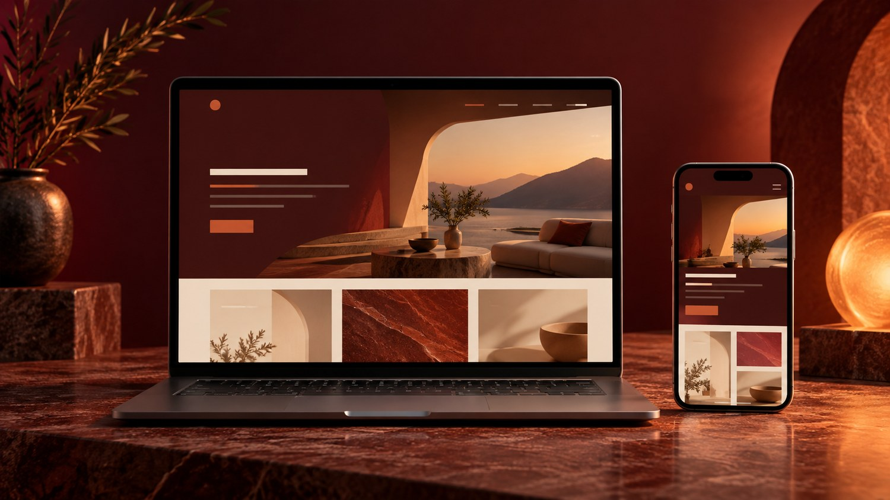
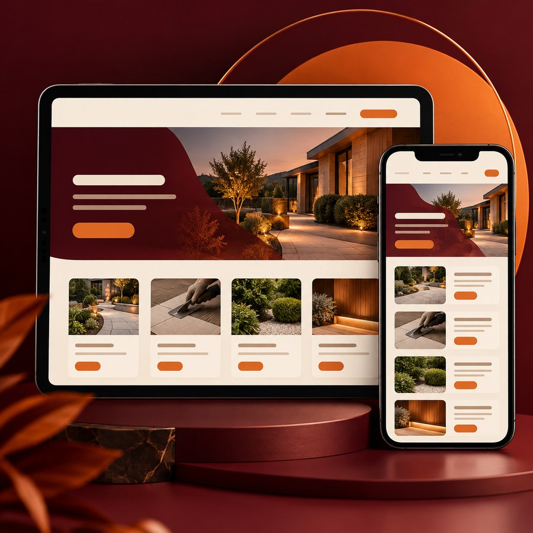
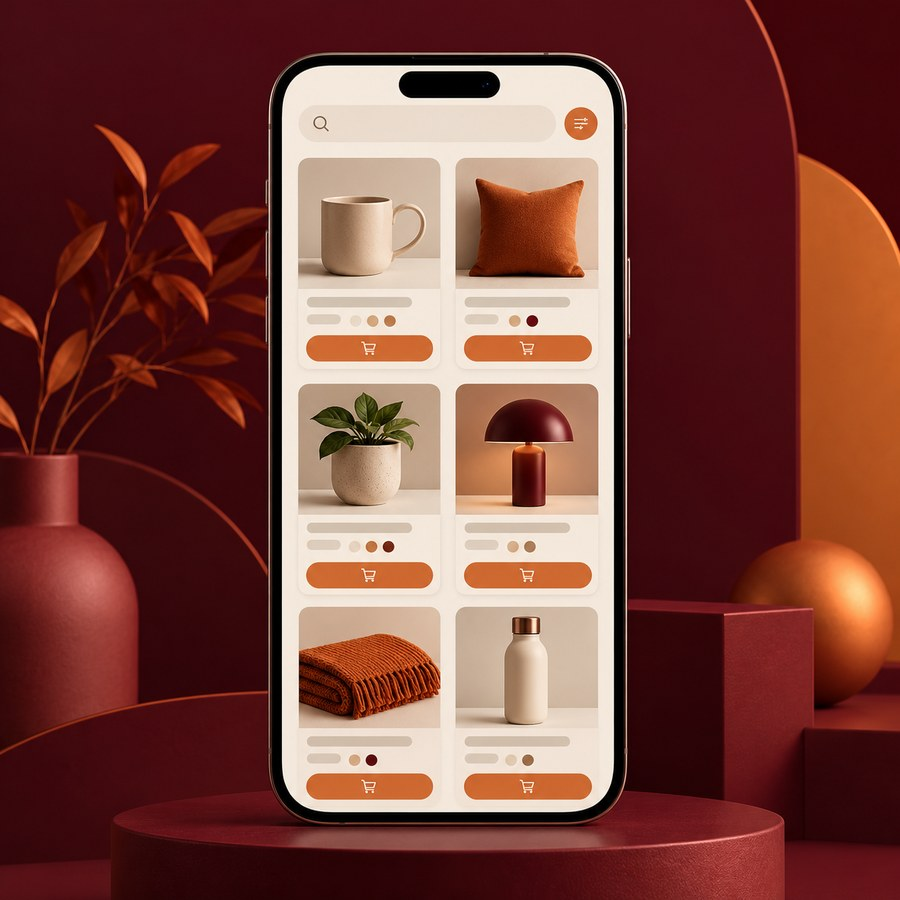

Criação de sites
Apresente seu negócio, seus serviços e seus contatos em um site organizado e adaptado para celular.
Sites • cardápios digitais • agendas online
Crio sites, cardápios digitais, agendas online e páginas de links para a bio do Instagram. Ajudo você a apresentar seu negócio com clareza e facilitar o contato com seus clientes.
Sites prontos em 7 dias

Apresente seu negócio, seus serviços e seus contatos em um site organizado e adaptado para celular.
Organize seus produtos e informações para que os clientes consultem o cardápio pelo celular.
Facilite a apresentação dos serviços e a organização de agendamentos, como para cílios e beleza.
Reúna seus links, serviços e contatos em uma página simples para colocar na bio do Instagram.

Isso acontece com você?
Quando tudo depende das redes sociais, seus clientes podem ter dificuldade para encontrar informações sobre o que você oferece.

Como posso ajudar
Você me conta o que deseja divulgar ou organizar. Eu ajudo a transformar essas informações em um formato digital claro e fácil de acessar pelo celular.
Portfólio
Veja alguns exemplos de formatos que podem ser adaptados para apresentar os serviços e as informações da sua marca.
Apresente sua empresa, explique o que oferece e facilite o contato com seus clientes.
Ajude seus clientes a consultar as opções e as informações do seu negócio pelo celular.
Apresente seus serviços e facilite a consulta de informações sobre agendamentos.
As imagens são ilustrações de exemplo para demonstrar os formatos.
Quem está por trás
Sou criadora da MFT Digital. Ajudo pequenos negócios e profissionais a apresentarem seus serviços na internet com mais organização.
Quero entender o que você precisa e criar uma solução digital clara, prática e alinhada ao seu negócio.
Vamos conversarOrçamento gratuito
Conte o que você precisa e vamos conversar sobre o formato ideal. O prazo de criação de sites é de 7 dias.